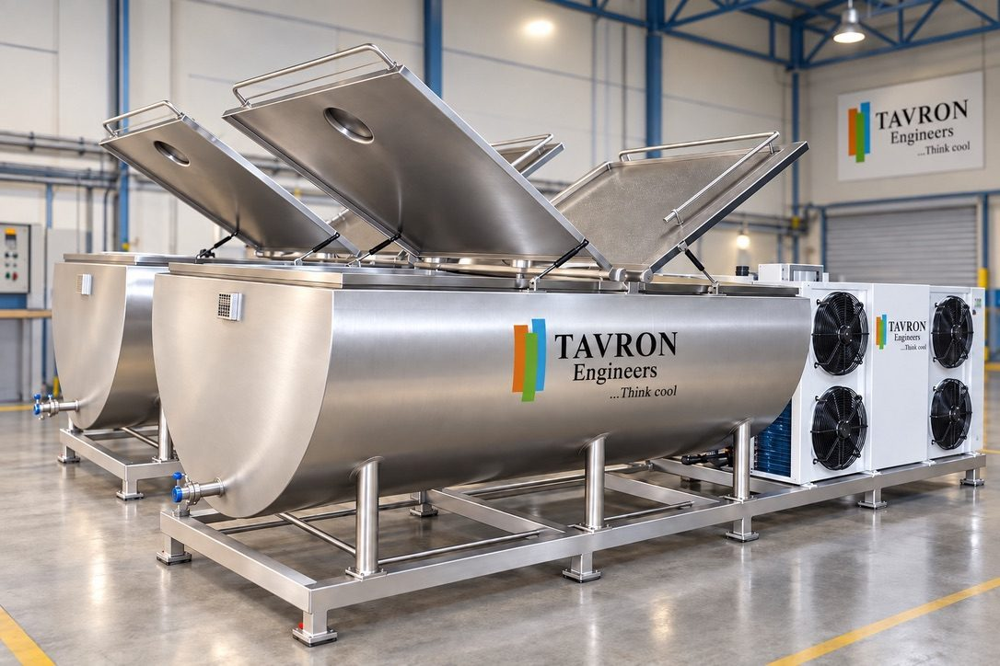
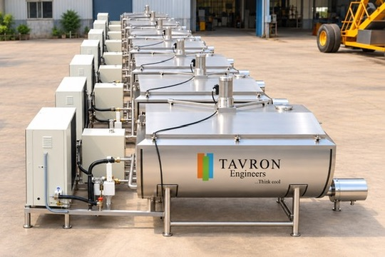

Direct Expansion (DX) milk coolers
Bulk Milk Cooler Manufacturer
Stainless-steel bulk milk coolers from 300 L to 10,000 L that cool raw milk in the tank and hold it cold until it's processed or transported. Built by Tavron Engineers, manufacturing in Chennai, India since 2004, for dairy farms, collection centres, chilling centres and dairy plants.

- Cooling
- Direct Expansion (DX)
- Cooling surface
- Laser-welded pillow plate
Know more
A pillow plate is made of stainless-steel sheets welded together with channels between them. Refrigerant flows through the channels, close to the milk, for effective heat transfer.
- Inner shell
- SS 304 / SS 316
- Milk temperature
- 3–4 °C
- Cleaning
- CIP, rotary spray ball (optional on open tanks)
- Controls
- Digital temperature controller, PLC/HMI option
- Standard
- Conforms to ISO 5708
Know more
ISO 5708 is the international standard for refrigerated bulk milk tanks. It covers their design, construction and performance, and the methods used to test them.
Sizes
Bulk milk cooler sizes and dimensions


| Capacity | Tank type | Size (mm) |
|---|---|---|
| 300 L | Vertical open | 820 diameter × 625 high |
| 500 L | Vertical open | 1000 diameter × 750 high |
| 1,000 L | Horizontal open | 1100 wide × 1800 long |
| 2,000 L | Horizontal open | 1400 wide × 2100 long |
| 3,000 L | Horizontal closed | 1450 high × 2000 long |
| 5,000 L | Horizontal closed | 1600 high × 2600 long |
| 10,000 L | Horizontal closed | 1800 high × 4000 long |
Sizes are indicative. Certified GA drawings are issued against each order.
How it works
What is a DX bulk milk cooler?
A Direct Expansion (DX) milk cooler, also called a bulk milk cooler (BMC) or milk chilling tank, is a refrigerated milk storage tank that cools freshly collected raw milk and holds it at the required storage temperature. Refrigerant circulates through cooling surfaces integrated with the tank, and heat passes from the milk through the stainless-steel surface to the refrigeration system. Tavron uses laser-welded pillow plate for this cooling surface.
They are also used by dairy cooperative societies, village collection centres and bulk milk collection facilities.

Which capacity do I need?
Send us your daily milk quantity, largest batch, collections per day, operating schedule and required cooling time, and we'll recommend a capacity and quote for it.
FAQ
Frequently asked questions
What capacities are available for Tavron DX milk coolers?
Tavron DX milk coolers are available in 300 L, 500 L, 1,000 L, 2,000 L, 3,000 L, 5,000 L and 10,000 L.
What material is used for the inner shell of the tank?
The inner shell is manufactured using high-quality SS 304 or SS 316 stainless steel to ensure hygiene and durability.
Can a Direct Expansion milk cooler be used for milk storage?
Yes. DX milk coolers are designed for cooling milk and maintaining it under refrigerated storage conditions before processing or transportation.
Brochure
Related products